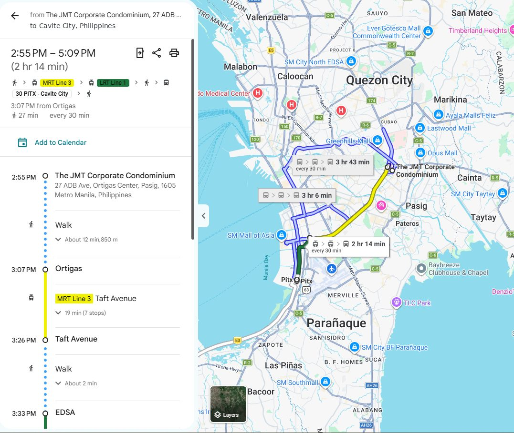

Is It Material?
One of the first habits finance drills into you is to stop before you chase a number and ask whether it actually matters.
Every reconciliation throws up differences. Some are timing, some are rounding, and once in a while one is a genuine mistake that would change what someone decides. Materiality is the discipline of telling them apart before you burn an afternoon. It isn't laziness. It's agreeing upfront on how big a difference has to be before it deserves anyone's attention, and then sticking to it.
Lately, alongside my day job, I've been spending more time on data science and AI engineering projects, and I keep running into the same problem under a different name: alert fatigue.
The zero-tolerance trap
When you first set up data quality tests, it's tempting to make everything strict. Row counts must match exactly, there are no nulls anywhere, and every total ties to the cent. It feels rigorous. Then the alerts start. A late-arriving record trips the row count. A rounding difference in a currency conversion fails a total. After a week of noise, someone mutes the channel, and the next alert to fire is the real one: the day a source system quietly drops half its data.
Strict checks that cry wolf end up weaker than sensible checks that people actually read.
Set the threshold before you look
In accounting, materiality is set before the audit starts, not after you've seen the numbers. That order matters. Pick the threshold after seeing the variance, and it's very easy to talk yourself into "that's fine".
I learned what materiality really feels like when I was working in Ortigas City and living out in Cavite City, a brutal two-hour bus ride each way. One Sunday afternoon I had to go into the office just to investigate and correct a variance of 500 PHP. Objectively, 500 PHP was a rounding error in the grand scheme of the ledger. But add a 100 PHP bus fare and four hours sitting in transit on my day off, and that 500 PHP felt deeply, painfully material. I gritted my teeth and made the trip, and it taught me a lasting lesson: context defines materiality.

The same goes for pipelines and models. For each check, decide what counts as material and write it down:
- A total that's out by a rounding amount gets a logged warning, not a page.
- A row count that's down by more than normal late arrivals would explain fails the run.
- A key column that's suddenly null for a whole partition stops everything.
dbt makes this easy, because tests can be set to warn or error, with thresholds. The hard part isn't the syntax. It's having the conversation about what actually matters.
🤖 Materiality for LLM evals
This applies even more to LLM work. If your eval suite demands an exact string match, a model that rewords a correct answer "fails", and soon nobody trusts the results. Decide what a material failure is, such as a wrong fact, a missing required field or a made-up source, and score those hard. Treat wording changes as immaterial unless tone is the thing you're testing.
The takeaway
Materiality isn't about caring less. It's about protecting your attention so you notice the errors that really matter. Set the threshold first, match the alert level to it, and review it when the stakes change.